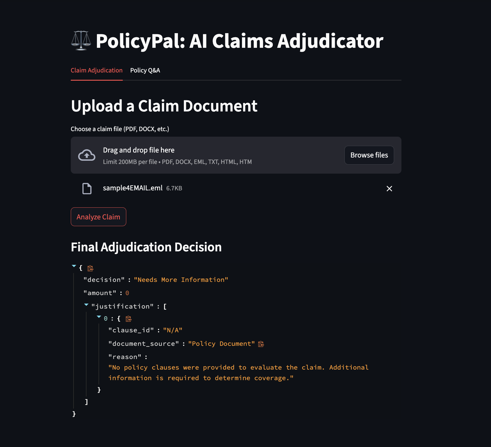

About the Project
PolicyPal is an intelligent automation tool designed to revolutionize the insurance industry. By leveraging a Retrieval-Augmented Generation (RAG) model, it reads and understands complex insurance policy documents to automate the claim adjudication process, drastically reducing manual review time and increasing accuracy.
Key Features
- Natural Language Understanding of policy clauses.
- Automated validation of claims against policy coverage.
- Significant reduction in processing time per claim.
- Scalable architecture to handle high volumes of documents.